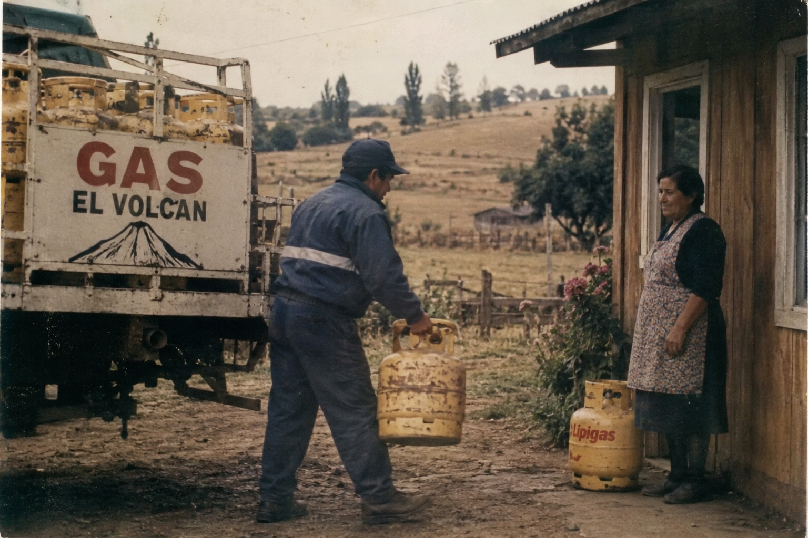

Gas a domicilio
Distribuimos cilindros de 5 kg, 11 kg y 15 kg directamente al domicilio de nuestros clientes.

Conoce más sobre Distribuidora Gas El Volcán y nuestro servicio de distribución de gas.
Gas El Volcán es una empresa familiar dedicada a la distribución de gas a domicilio en la ciudad de Chillán, Región de Ñuble.
Desde 1998 trabajamos entregando cilindros de gas a nuestros clientes, buscando ofrecer un servicio cercano, sencillo y confiable.

Distribuimos cilindros de 5 kg, 11 kg y 15 kg directamente al domicilio de nuestros clientes.
Buscamos mantener una comunicación clara y sencilla durante todo el proceso de pedido.
Nuestra plataforma permite consultar el estado de un pedido y conocer el avance de la entrega.
Queremos modernizar nuestro servicio utilizando herramientas digitales que permitan realizar pedidos de manera sencilla y consultar su estado sin depender exclusivamente de llamadas telefónicas.
Puedes realizar tu pedido directamente desde nuestro sitio.
Realizar pedido